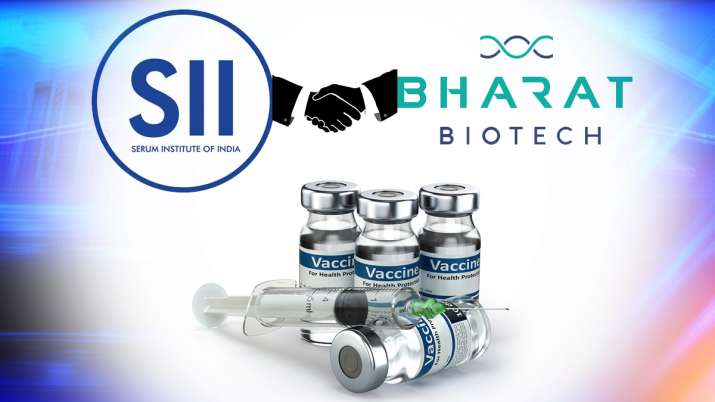

Mission : We seek to address the health care needs of the 5.8 billion people in the emerging markets by driving innovation and being a frontrunner in research and development of new vaccines and bio-therapeutics.
Overview: advanced research, we create innovative vaccines and bio-therapeutics for a healthier tomorrow.
We have delivered over 4 billion vaccines doses all over the world. Our key priority is to solve the health challenges of the developing world by developing innovative vaccines and therapeutics.
From the beginning, the founders envisioned a company that consistently generates fresh intellectual capital to combat challenging diseases.
Bharat Biotech started operations in 1996—the year Dr. Krishna M. Ella and Mrs. Suchitra Ella returned from the US to set up a company dedicated to creating innovative vaccines and bio-therapeutics. Dr. Ella was returning from a research and teaching stint in the US and he wanted the new company to be an intellectual capital powerhouse. In the years that followed, he assembled a team of bright scientists and led the creation of path-breaking vaccines.
Today, Bharat Biotech has over 160 patents.
As a leading biotechnology company, we seamlessly straddle the worlds of product research and manufacturing to create effective vaccines and therapeutics for patients around the world.
It is engaged in the drug discovery, drug development, manufacture of vaccines, bio-therapeutics, pharmaceuticals and health care products.[4]
Bharat Biotech has its manufacturing facility situated at Genome Valley, Hyderabad, India.[4] As of July 2020, the company has over 700 employees[5] and has a presence worldwide.[4]The company has been responsible for developing an eco-friendly recombinant[6] and a naturally attenuated strain derived Rotavirus vaccine called ROTAVAC.[7][8] They were one of the first to develop vaccines for viral diseases like Chikungunya[9][10] and Zika.[11][12] The company also produces vaccines for Japanese Encephalitis.[13
In April 2020, the company announced that they have partnered with US-based company FluGen and University of Wisconsin-Madison to develop a COVID-19 vaccine.[14][15]
In May 2020, Indian Council of Medical Research's (ICMR's) National Institute of Virology approved and provided the virus strains for developing a fully indigenous COVID-19 vaccine.[16][17] On June 29, 2020, the company got permission to conduct Phase 1 and Phase 2 clinical trials in India for a developmental COVID-19 vaccine named Covaxin, from the Drugs Controller General of India (DCGI), Government of India.[18][19][20][21] The Central Drugs Laboratory (CDL) at Kasauli in Himachal Pradesh has been engaged in testing experimental batches of Bharat Biotech's COVID-19 vaccine Covaxin on a priority basis.[22] A total of 12 sites were selected by the Indian Council for Medical Research for Phase I and II randomised, double-blind and placebo-controlled clinical trials of vaccine candidate.[23][24]
In September 2020, the company announced that it was going to manufacture the novel chimp-adenovirus, a single dose intranasal vaccine (codenamed BBV154) for COVID-19 being developed in collaboration with the Washington University School of Medicine in St Louis, Missouri. It is currently undergoing clinical trials.[25][26]
Coronavirus: India to increase Covaxin production to 10 crore doses per month by September 2021
Amid increasing coronavirus cases in India, the government, under Atmanirbhar Bharat 3.0 Mission COVID Suraksha, urged the vaccine producers to accelerate the development and production of indigenous COVID-19 vaccines. This is being implemented by Department of Biotechnology Government of India.
Under this mission, the Department of Biotechnology is providing financial support as grant to vaccine manufacturing facilities for enhanced production capacities. The current production capacity of indigenously developed Covaxin vaccine will be doubled by May-June 2021 and then increased nearly 6-7 fold by July - August 2021.
This increases the production from 1 crore vaccine doses in April, 2021 to 6-7 crore vaccine dose/month in July - August. It is expected to reach nearly 10 crore doses per month by September 2021.
/
Earlier, inter-ministerial teams had visited the sites of two main vaccine manufacturers in India to get their inputs on how production can be ramped up. In this period, there have been extensive reviews and feasibility studies on the plans being discussed with vaccine manufacturers. As a part of this augmentation plan, capacities of Bharat Biotech Limited, Hyderabad as well as other public sector manufactures are being upgraded with required infrastructure and technology. Financial support is being provided as grant from the governemnt to the tune of approx Rs 65 crore to Bharat Biotech's new Bangalore facility which is being repurposed to increase the capacity of vaccine production.
As many as three public sector companies are also being supported to increase the capacity of vaccine production. Haffkine Biopharmaceutical Corporation Ltd, Mumbai -a State PSE under State Govt of Maharashtra. Financial support as grant from the government to the tune of approx Rs 65 crore will be provided for this facility to be made ready for manufacturing. The Haffkine Biopharmaceuticals Ltd had asked for around 12 months to complete this task. However, the Central government has asked them to expedite and complete the task urgently within 6 months. The facility will have a capacity of 20 million dozes per month, once functional.
Manufacturing Facilities
rDNA facility (separate blocks for vaccines and bio-therapeutics).
Bacterial facility.
Cell Culture facility.
Polysaccharide facility.
Probiotic facility
Formulation & Filling facilities.
Centralised, fully automatic inspection, labeling and packing area.
Prefabricated, independent GMP modules with HVAC for rDNA, viral and bacterial products.